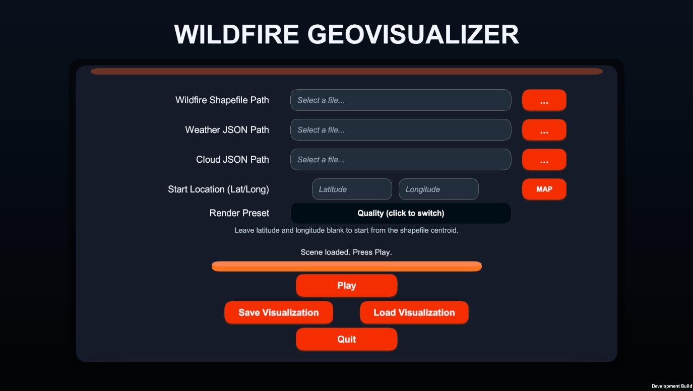
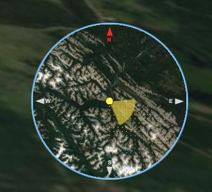
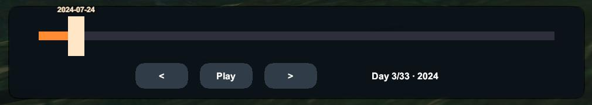
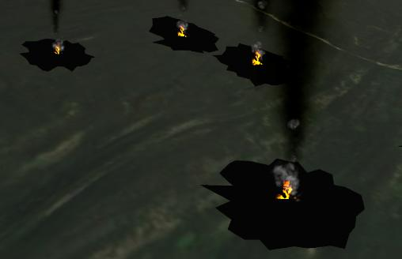

Phase 1 — Data Acquisition
Fire detection data originates from the NASA Fire Information for Resource Management System (FIRMS), which distributes near-real-time active fire data from both MODIS (aboard Terra and Aqua) and VIIRS (aboard S-NPP, NOAA-20 and NOAA-21). The platform uses only the MODIS Collection 6.1 active fire product: MODIS's Terra and Aqua satellites provide up to four overpasses per day and a consistent archive extending back to 2000, and using a single sensor family across the pipeline avoids mixing MODIS's numeric 0–100 confidence scale with VIIRS's categorical (low/nominal/high) scale, simplifying both the pipeline and the later cross-tool comparison against kepler.gl and the ArcGIS Online Experience Builder (see Results).
Data Acquisition Pipeline
A Python script queries MODIS fire detections one day at a time across the full user-specified date range and concatenates them into a single dataset. Network failures are handled by a retry mechanism with up to three attempts per date and an exponential backoff delay between retries. The final dataset is exported as both a CSV file and a point shapefile in EPSG:4326, carrying the standard FIRMS attributes (coordinates, acquisition date/time in UTC, Fire Radiative Power in megawatts, numeric confidence, and the brightness/bright_t31 temperature bands).
Study Area Definition
Rather than a configurable boundary tool, the pipeline targets a single fixed bounding box covering Jasper National Park, Alberta, Canada (119.0°W, 52.5°N to 117.0°W, 53.5°N; ~11,000 km² core area), the site of the July 2024 wildfire complex used as this thesis's case study.
Confidence Filtering
MODIS encodes detection confidence as a numeric percentage (0–100). A filtered subset is generated by retaining detections of nominal confidence and above, that is at least 30 percent — the minimum threshold established in the peer-reviewed literature for fire-extent studies (Giglio et al., 2016). This reduces commission error from marginal detections while avoiding the systematic underrepresentation of fire extent that a more restrictive cutoff would cause.
Meteorological Data
Because the Open-Meteo Historical Archive API operates on individual coordinate points, sampling locations are distributed across the bounding box on a regular one-degree grid, capped at sixteen points per run. For each point and day, daily mean/max/min air temperature (2 m), wind speed and direction (10 m), and mean/maximum cloud cover are retrieved and exported as CSV and JSON, together with a metadata block recording the source, bounding box, date range and generation timestamp.
Phase 2 — Data Processing and Unity Integration
After acquisition, fire detection records are loaded into the Unity runtime, where the coordinate bridge, clustering and timeline construction described below are handled through the Unity scripting API and the Cesium for Unity package.
Shapefile Import
At runtime, the fire shapefile produced by the Python acquisition pipeline is read through
NetTopologySuite’s ShapefileDataReader, iterating over each point feature in the
.shp/.dbf/.shx/.prj bundle. The ACQ_DATE and ACQ_TIME DBF fields are parsed
into C# DateTime objects, and a path-discovery fallback chain locates the most recently
generated output without manual reconfiguration.
Coordinate Transformation (WGS84 to Unity World Space)
The central technical challenge of this thesis is bridging the WGS84 geographic coordinate system used by Earth observation data and the local Cartesian coordinate system used by the Unity renderer, whose single-precision arithmetic loses accuracy at distances of millions of metres from the scene origin. This is resolved via Cesium for Unity’s Earth-Centred, Earth-Fixed (ECEF) pipeline:
- Latitude, longitude and (optionally) height are extracted from the shapefile geometry.
- WGS84 coordinates are converted to ECEF using the
CesiumEllipsoid.WGS84model. - The ECEF position is transformed to Unity local space via the georeference’s double-precision
ecefToLocalmatrix, after theCesiumGeoreferenceorigin has been relocated to the geographic centroid of the loaded fire dataset. - A
CesiumGlobeAnchorcomponent is attached to each fire marker, with itspositionGlobeFixedproperty set to the ECEF coordinate, so the marker automatically recalculates its Unity position whenever the camera-driven origin shift occurs. - A configurable vertical offset (default: 16 m above the terrain surface) is applied after terrain height-snapping.
Because Cesium streams terrain tiles progressively, a terrain-readiness spawn gate samples downward raycasts at a representative subset of fire locations, requiring a minimum hit ratio of 75% across two consecutive stable passes before any marker is spawned, using an exponential backoff retry schedule (0.5 s, 1 s, 2 s, up to 15 attempts).
Fire Clustering
Detections within a configurable spatial radius and temporal window (clusterRadius and
clusterTimeWindowDays) are grouped, and each marker’s scale is computed as
baseScale × sizeMultiplier × sqrt(frpNormalized) × sqrt(groupCount),
where frpNormalized is the detection’s Fire Radiative Power divided by the median
FRP in the dataset. This makes high-radiative-power, high-density clusters visually prominent while
keeping the marker count manageable. clusterTimeWindowDays also controls how long a
marker remains visible: set high, markers persist to show cumulative fire extent; set low, markers
fade after that many days for a smoother, lighter time-lapse.
Phase 3 — Interactive Visualisation
The runtime environment provides a full interactive application built on Unity’s scene graph, with a configuration screen before load and an in-scene HUD once the reconstruction is running.


Timeline Animation
Fire detections are grouped by acquisition date into an ordered, day-by-day sequence. Each daily transition fades out the previous day’s markers over a configurable duration (default: 0.8 s) while fading in the new day’s markers, using coroutine-driven scale and opacity interpolation sequenced on Unity’s Timeline.
Weather Overlays
Wind data loaded from the Open-Meteo cache drives two concurrent effects: each fire marker’s particle sway is updated per timeline day to reflect the wind vector at the nearest weather grid point, and a wind-arrow grid is instantiated over the fire extent, each arrow rotated to the local wind direction, scaled by wind speed, and coloured by air temperature (with a legend explaining the scale). The daily cloud-cover percentage is shown as a readout in the timeline overlay rather than as a separate map layer.
Camera and User Interface
On desktop, free-fly navigation uses standard WASD movement and mouse look. The in-scene HUD shows a timeline bar with the current date and total day count, a cloud-cover readout, and a wind speed/direction readout; hotkeys [1]/[2]/[3] step the timeline backward, toggle play/pause and step forward, and [4] toggles the wind-arrow overlay.


WebGL Deployment and Browser Execution
Beyond the desktop build, the platform is compiled for Unity’s WebGL target so the Jasper reconstruction can be explored in a browser without installation. The Unity runtime is translated into WebAssembly and JavaScript, with Cesium for Unity continuing to stream 3D tiles and terrain through the browser’s WebGL interface. Because a browser cannot read local files directly, the bundled fire and weather JSON records are first copied into the browser’s persistent storage by a bootstrap step before data loading begins; the georeference origin is then moved to Jasper’s geographic centre. In this build, navigation is handled by a map-style drag-look controller — the cursor stays free and the view only rotates while the mouse is dragged — with a dedicated button to reframe the camera on the fire’s centre. Because Cesium for Unity relies on multi-threading, the page must be cross-origin isolated via the Cross-Origin-Opener-Policy (COOP) and Cross-Origin-Embedder-Policy (COEP) HTTP headers, so the build is hosted on a static host that serves both, making the reconstruction shareable through a single link.
Tools and Technologies
Core Platform
- Unity3D (C# scripting), desktop + WebGL builds
- Cesium for Unity (georeferencing, terrain streaming)
- Unity Universal Render Pipeline (URP)
- Unity Timeline (day-by-day sequencing)
Geospatial Libraries
- NetTopologySuite & NetTopologySuite.IO.ShapeFile (via NuGet for Unity)
Data Sources
- NASA FIRMS — MODIS Collection 6.1 (fire detections)
- Open-Meteo Historical Archive API (weather)
- Cesium ion — Cesium World Terrain (Airbus WorldDEM4 Ortho) + Sentinel-2 cloudless imagery (EOX)
Development Environment
- Python (MODIS/Open-Meteo acquisition pipeline)
- NuGet for Unity (package management)
- Visual Studio / VS Code